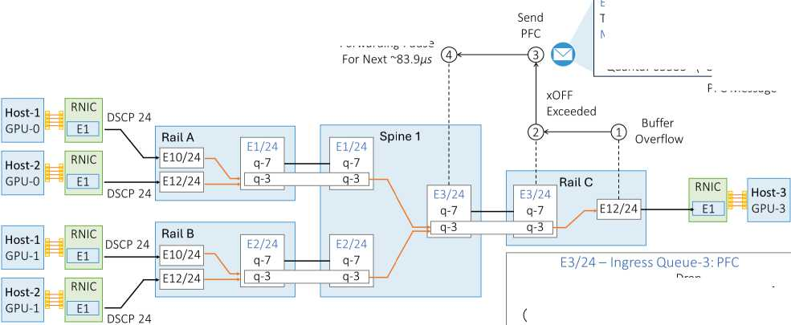
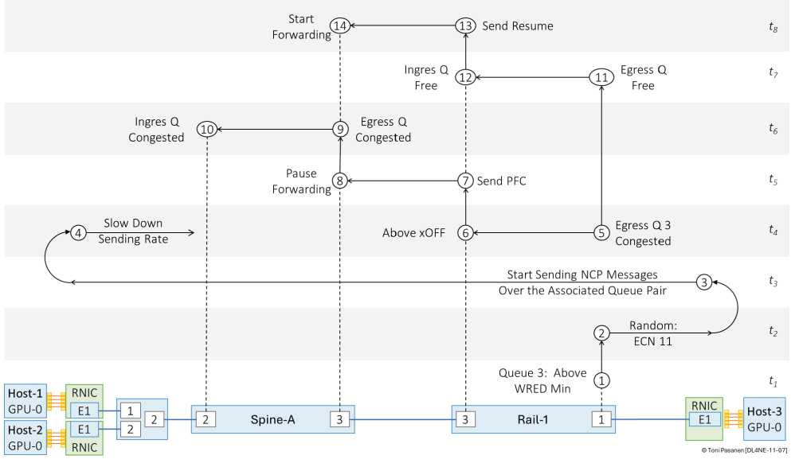

书 p247-253 以 Rail C→Spine1→Rail A/B 为例：egress 溢出→超 xOFF→发 PFC→上游停队列→上游 egress 堵→继续向上游发 PFC→…→下游 drain 后发 PFC resume 逐级恢复。网工必看：暂停会向上游蔓延，不及时 drain 就 PFC 风暴。Watchdog 防死锁。
p258 金句：ECN 阈值 < xOFF 阈值，让端点先降速，能不 pause 就不 pause。PFC 是最后手段，不是常规手段。调参顺序：先 ECN 灵敏，后 xOFF 兜底。
① 分类（DSCP→QoS组）② 内部标签/队列 ③ 调度（DWRR/严格）④ 队列使能 PFC+Watchdog ⑤ 绑定策略 ⑥ 接口使能。书 p262-269 给 Cisco/Nexus 示例，抄时注意：分类与队列全网一致，否则 PFC 错队。


默写六步配置，并标出哪步最易错（分类一致性）。